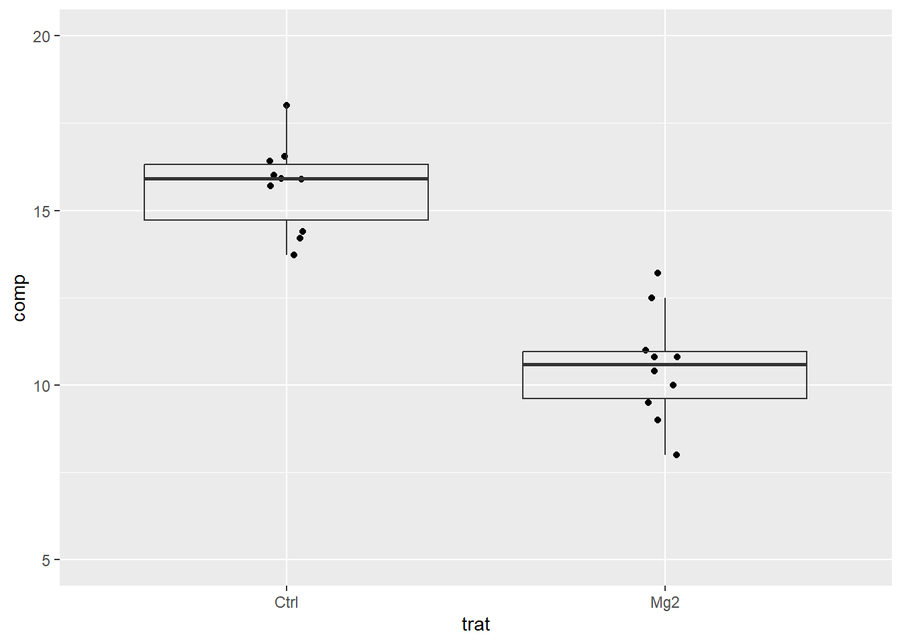
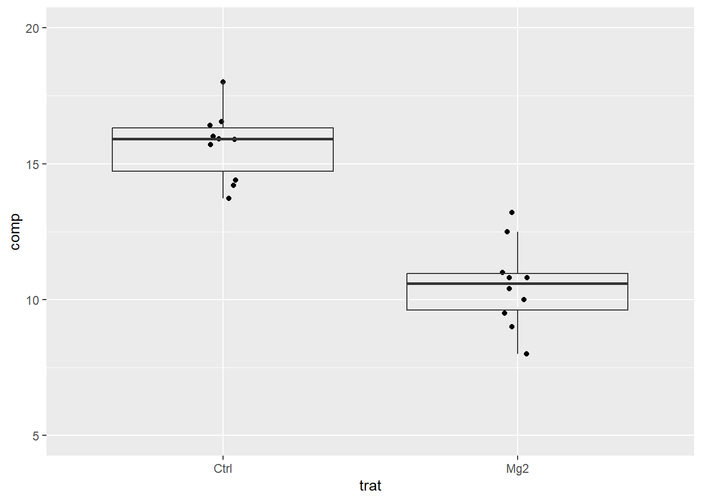
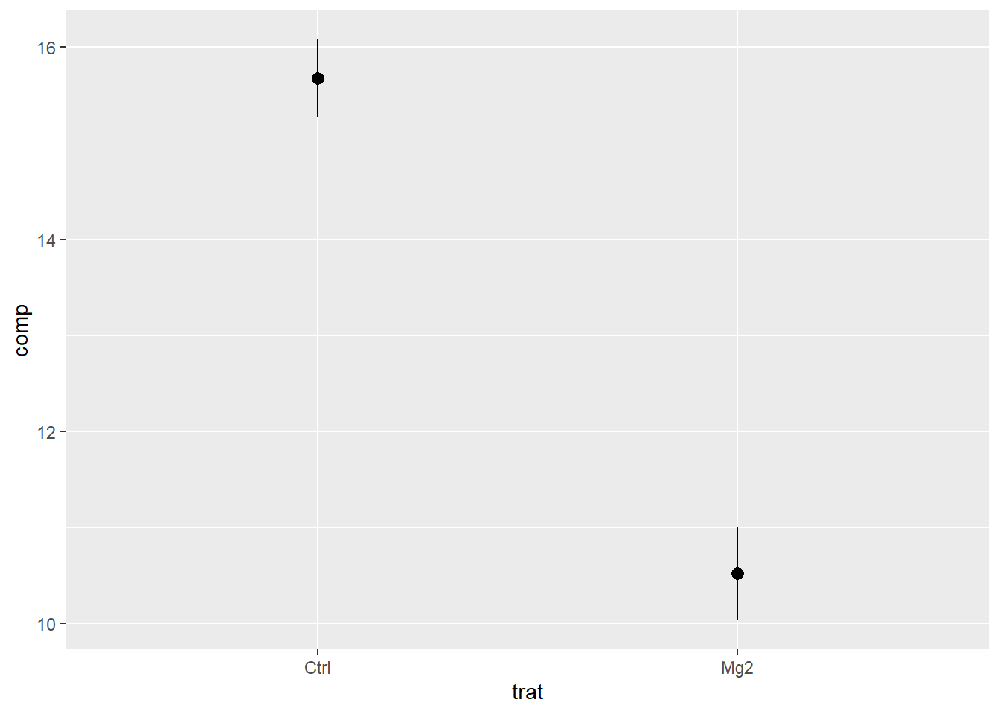
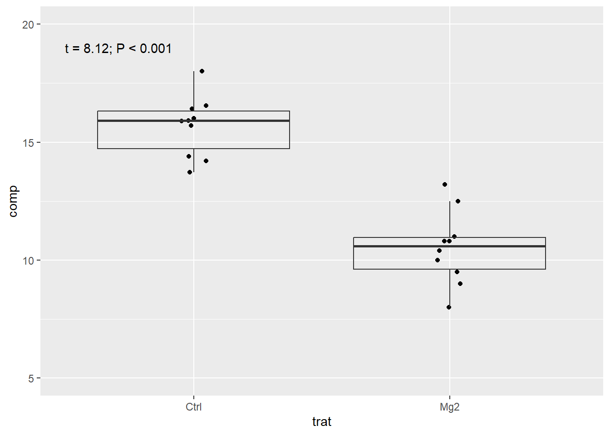

library(tidyverse)
library(readxl)
mg <- read_excel("dados-diversos.xlsx","magnesio")
mg |>
ggplot(aes(trat, comp))+
geom_jitter(width = 0.05)+
geom_boxplot(fill = NA,
outlier.colour = NA)+
ylim(5,20)
Aula 8
library(tidyverse)
library(readxl)
mg <- read_excel("dados-diversos.xlsx","magnesio")
mg |>
ggplot(aes(trat, comp))+
geom_jitter(width = 0.05)+
geom_boxplot(fill = NA,
outlier.colour = NA)+
ylim(5,20)
#Para usar o t.test, organizar a tabela no formato largo, um nível do tratamento em uma coluna e outro em outra coluna
mg2 <- mg |>
#pega a coluna 1, ...
pivot_wider(1,
names_from = trat,
values_from = comp)
mg2# A tibble: 10 × 3
rep Mg2 Ctrl
<dbl> <dbl> <dbl>
1 1 9 13.7
2 2 12.5 15.9
3 3 10 15.7
4 4 8 14.2
5 5 13.2 15.9
6 6 11 16.5
7 7 10.8 18
8 8 9.5 14.4
9 9 10.8 16.4
10 10 10.4 16 
Effect sizes were labelled following Cohen's (1988) recommendations.
The Welch Two Sample t-test testing the difference between mg2$Mg2 and mg2$Ctrl
(mean of x = 10.52, mean of y = 15.68) suggests that the effect is negative,
statistically significant, and large (difference = -5.16, 95% CI [-6.49,
-3.83], t(17.35) = -8.15, p < .001; Cohen's d = -3.65, 95% CI [-5.12, -2.14])mg |>
ggplot(aes(trat, comp))+
geom_jitter(width = 0.05)+
geom_boxplot(fill = NA,
outlier.colour = NA)+
ylim(5,20)+
annotate(geom = "text",
x = 0.7, y = 19,
label = " t = 8.12; P < 0.001")